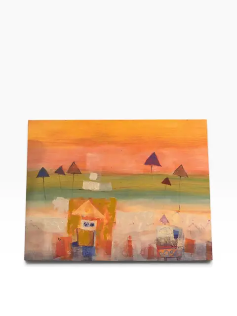
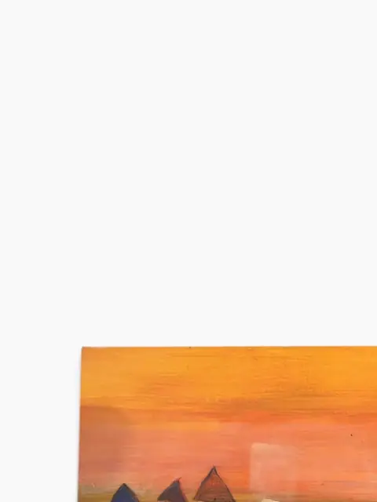
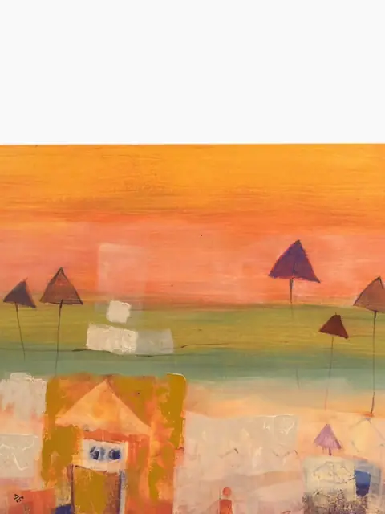
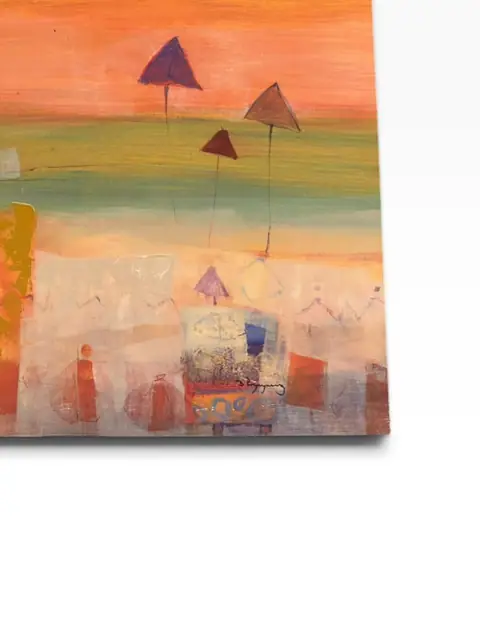
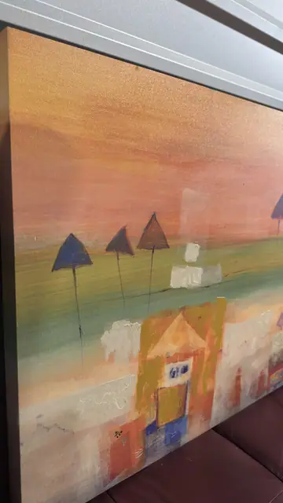
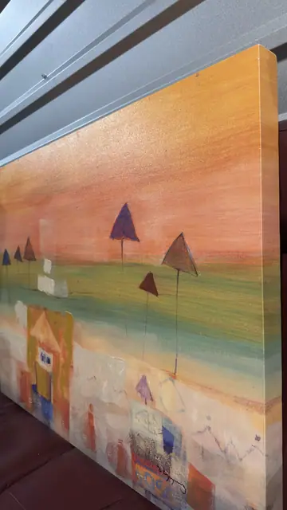
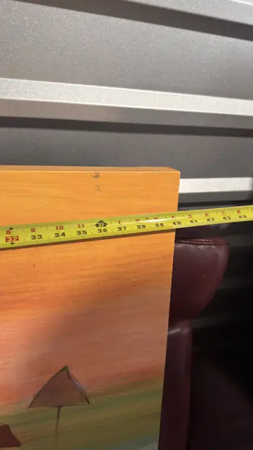
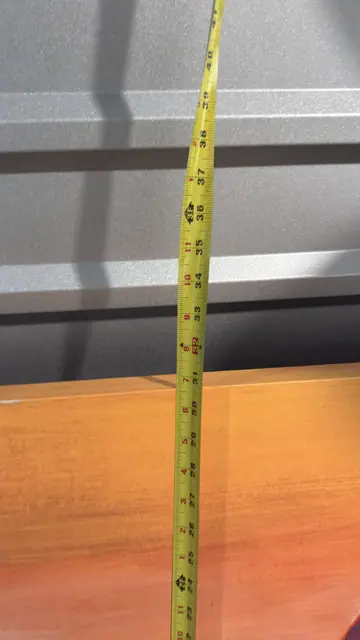

Paintings & Prints
Abstract Village Landscape — Signed, Gallery-Wrapped Canvas
· 21st century
Price Upon Request








About the Item
A vibrant abstracted village scene rendered in warm sunset hues of amber, coral and gold, with stylized houses and triangular trees floating above a luminous horizon. On gallery-wrapped canvas, this decorative work brings a warm, contemporary glow to any interior. Signature lower right, illegible (scripted name); small mark lower left possibly an edition number. No verifiable artist found; work appears to be a contemporary decorative canvas print.
Details
- Creation Year:
- 21st century
- Medium:
- Print on canvas
- Period:
- 21St
- Condition:
- Offered in the condition shown in the photographs.
- Reference Number:
- VO-288